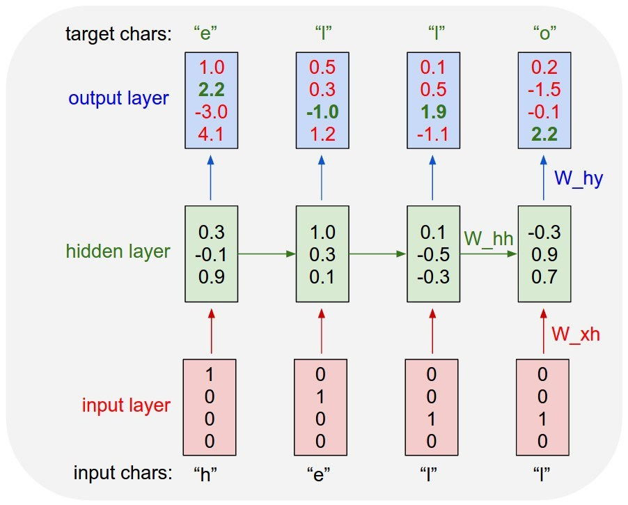

I started hearing about this term "machine learning", during my first year of college and was seeing organisations like google, facebook applying it almost everywhere so i considered it to be some kind of magic that only top notch programmers could apply. Little did i know, 2 years after that i would be applying these algorithms myself
Char rnn was one of the first projects i started working on which wasn't just me reading theory and the code and was kinda my starting point to code projects independently without just copy pasting the code and gloating when it worked (which it obviously would :P ). It was also one of the longest projects i worked on, partly because i didn't understand tensorflow that much, and the inspiration which came from this absolutely awesome gist from andrej karpathy and initiated in me a genuine interest in deep learning, moving from idolizing Andrew ng to a wider community of researchers and engineers building different and amazing stuff.
If we look at it from a very Low Resolution perspective, an RNN seems too good to be true. Dealing with language, context matters, so as opposed to a traditional neural network we want to preserve the previous input sequences in memory as opposed to independent variables in an ANN. Below i try to explain how the charRNN works and introduce an improvement- the LSTM. A better explanation and a deeper understanding can be developed by reading this post about RNN and LSTM.
charRnn-Background
One of the main reasons why recurrent nets are used or even exist is due to the fact that other architectures like ann or cnn are too constrained in their inputs. instead rnn allows us to use sequences of inputs which can be found in real world in many cases be it natural language, image captioning or stocks where the current value is dependent on previous values. A rnn executes as it being unrolled in time steps. This fact is evident from the image below where the hidden layer for the first time step is fed to the second layer and so on. Another important thing to remember is that every time step within a single layer use same weights.

The term “char-rnn” is short for “character recurrent neural network”, and is effectively a recurrent neural network trained to predict the next character given a previous character. In this sense, we can think of a char-rnn as a classification model where we output a probability distribution of different classes when doing image classification, for a char-rnn we wish to output a probability distribution of character classes, i.e., a vocabulary of characters. In practice, each character is typically encoded as a one-hot vector, where the position of the one indicates the position of the character in the vocabulary. For example, in a vocabulary consisting of the twenty-six lower-case letters and space, any character would be represented as a 1 in that position and 0 in others. Below i show how a char rnn works.

Training a char-rnn using tensorflow:
In his gist, andrej karpathy uses numpy to implement the char rnn and i wanted to implement this in tensorflow due to well faster training in gpu and well, tensorflow has such a neat way of code organisation where you define a model earlier and then use session to feed variables to this model. I was tired of seeing the same data being used everywhere,"the mini shakespeare", so a constant theme of this blog is that i use examples which are different than the traditional norm being used so that people can generalise the model for their purpose rather than having to read it from a variety of resources. In addition to that, most of my models are trained on jupyter notebook so they can get a cell by cell execution and understand how the algorithm really works. I trained 3 different datasets for my purpose - rick n morty subtitles (cuz why not :P), the generic mini shakespeare and donald trump tweets ( cuz his tweets are interesting)
Learning from my mistakes :
- track the initial state throughout and initialise it at the start of every epoch
- batch size and sequence size are 2 different things.(learnt the hardway)
- use LSTM instead of rnn because of remembering long term dependencies.